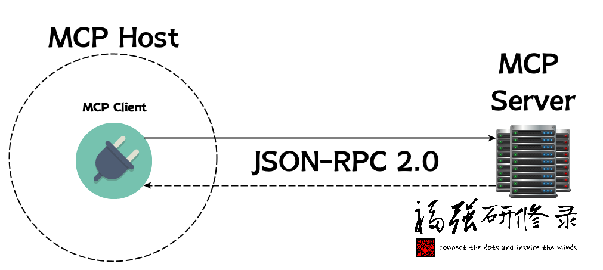
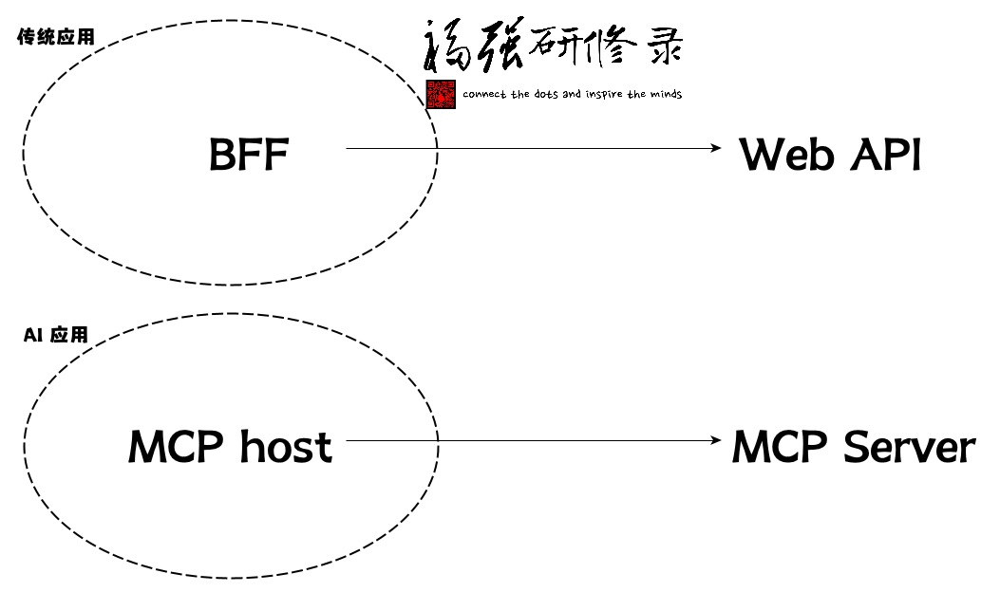

用Scala编写一个MCP Server
王福强
aka. Build a MCP Server with Scala
接[一篇看懂MCP])(https://afoo.me/posts/2025-02-26-mcp-explained.html) 1， 我们今天讲如何实操。
基础知识
首先铺垫一点儿背景知识， MCP的通信采用JSON-RPC 2.0规范作为wire format（为啥用英文呢？比较精确些）， 交互嘛，就是Client-Server架构的RPC模式（远程过程调用，Remote Procedure Call）。

简单来说就是， 双方通信的时候该传什么数据格式，根据 JSON-RPC 2.0 规范指定。
比如， 我们如果用下面的schema定义：
{
"type" : "object",
"properties" : {
"name" : {
"type" : "string",
},
"age" : {
"type" : "integer",
}
},
"required" : [ "name" ],
// ...
}那么服务器和客户端之间传输的数据可能就是这样的：
{
"name": "Fuqqiang"
// age 可选，不一定非要传
}其次，与基于REST(ful)规范所用的多个endpoints的实践方式不同, JSON-RPC 2.0 用的是单一endpoint来承接所有请求（可以类比GraphQL，如果还有人记得它的话），只不过，因为MCP有两种Transport类型， 在使用SSE类型的Transport的时候（也就是HTTP），其实会设置两个endpoint来承接客户端请求，一个是常规的endpoint来承接所有请求，一个是建立SSE通道。
动手开干
有了上面两个铺垫之后，我们开始着手用Scala来编写一个MCP Server（其实用啥语言都可以，社区有用py的，有用ts的）。
我们使用Spring团队新近跟Anthropic团队（MCP背后的公司）一起合作搞的MCP Java SDK，将其加到项目的依赖中（哥用的老牌Maven）：
<!-- https://mvnrepository.com/artifact/io.modelcontextprotocol.sdk/mcp -->
<dependency>
<groupId>io.modelcontextprotocol.sdk</groupId>
<artifactId>mcp</artifactId>
<version>0.7.0</version>
</dependency>
<!-- https://mvnrepository.com/artifact/io.modelcontextprotocol.sdk/mcp-spring-webmvc -->
<dependency>
<groupId>io.modelcontextprotocol.sdk</groupId>
<artifactId>mcp-spring-webmvc</artifactId>
<version>0.7.0</version>
</dependency>
<!-- https://mvnrepository.com/artifact/io.modelcontextprotocol.sdk/mcp-spring-webflux -->
<dependency>
<groupId>io.modelcontextprotocol.sdk</groupId>
<artifactId>mcp-spring-webflux</artifactId>
<version>0.7.0</version>
</dependency>后面两个，即mcp-spring-webmvc和mcp-spring-webflux， 根据自己喜好选就可以了，不用非得都要，一个提供同步 API，一个提供 Async 异步 API。
然后我们就可以开始编写主体代码了：
val stdioTransport = new StdioServerTransport(new ObjectMapper());
val mcpServer: McpSyncServer = McpServer.sync(stdioTransport)
.serverInfo("my-server", "1.0.0")
.capabilities(ServerCapabilities.builder()
.resources(true, true) // Enable resource support
.tools(true) // Enable tool support
.prompts(true) // Enable prompt support
.logging() // Enable logging support
.build())
.build();
Runtime.getRuntime.addShutdownHook(new Thread() {
override def run(): Unit = mcpServer.closeGracefully()
})
val jsonSchemaGenerator = new SchemaGenerator(new SchemaGeneratorConfigBuilder(SchemaVersion.DRAFT_2020_12, OptionPreset.PLAIN_JSON).build())
case class Hello(var name: String)
val schema = jsonSchemaGenerator.generateSchema(classOf[Hello])
val demoTool = new McpServerFeatures.SyncToolRegistration(new Tool("hello", "say hello world", schema.toPrettyString), arguments => {
val name = arguments.get("name").asInstanceOf[String]
new CallToolResult(util.Arrays.asList(new McpSchema.TextContent(s"Hello ${name}さん")), false);
});
mcpServer.addTool(demoTool)之后，打包： mvn clean package, 一个可以本地使用的MCP Server就准备好了。
你是放到Cursor里面用，还是Windsurf里面用，或者debug的时候用，直接配置如下启动命令就可以：
java -jar mcp-starter-1.0.0-SNAPSHOT.jar后续改进
json schema的构建
我们上面的演示代码中用了如下依赖在Java或者Scala代码中构建JsonSchema：
<dependency>
<groupId>com.github.victools</groupId>
<artifactId>jsonschema-generator</artifactId>
<version>4.37.0</version>
</dependency>不过，个人其实更喜欢Vert.x提供的DSL：
<dependency>
<groupId>io.vertx</groupId>
<artifactId>vertx-json-schema</artifactId>
<version>4.5.13</version>
</dependency> import io.vertx.json.schema.common.dsl.Schemas._ // 各种类型
import io.vertx.json.schema.common.dsl.Keywords._ // 属性限制
val jsonSchema = objectSchema()
jsonSchema.requiredProperty("name", stringSchema())
jsonSchema.property("age", intSchema())
println(jsonSchema.toJson.encodePrettily())启动命令
如果要推广，而不只是自己用，那么，有必要降低用户环境的依赖门槛，比如，你不能指望每个用户都得预装Java SDK/JRE，这时候，可以考虑通过GraalVM的native-image将程序打包成特定操作系统独立可执行文件。（类似golang的编译结果）
关于Transport
我们上面只是提供了Stdio方式的Transport，也就是只能本地调用， 如果企业内部，可能基于HTTP/SSE的Transport应用范围更广（当然，安全治理成本估计也会更高）。
写在最后
如果说过去的计算机系统都是通过Web API来实现尽量通用的互联互通，那么，或许 MCP Server 将会是 AI 时代的Web API。

MCP = Model Context Protocol↩︎


开天窗，拉认知，订阅「福报」，即刻拥有自己的全模态人工智能。